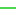

<!doctype html>
<html lang="en">
    <head>
        <meta charset="utf-8">
        <meta http-equiv="X-UA-Compatible" content="IE=edge">
        <meta name="viewport" content="initial-scale=1,user-scalable=no,maximum-scale=1,width=device-width">
        <meta name="mobile-web-app-capable" content="yes">
        <meta name="apple-mobile-web-app-capable" content="yes">
        <link rel="stylesheet" href="css/leaflet.css">
        <link rel="stylesheet" href="css/L.Control.Layers.Tree.css">
        <link rel="stylesheet" href="css/qgis2web.css">
        <link rel="stylesheet" href="css/fontawesome-all.min.css">
        <link rel="stylesheet" href="css/leaflet-measure.css">
        <style>
        html, body, #map {
            width: 100%;
            height: 100%;
            padding: 0;
            margin: 0;
        }
        </style>
        <title></title>
    </head>
    <body>
        <div id="map">
        </div>
        <script src="js/qgis2web_expressions.js"></script>
        <script src="js/leaflet.js"></script>
        <script src="js/L.Control.Layers.Tree.min.js"></script>
        <script src="js/leaflet-svg-shape-markers.min.js"></script>
        <script src="js/leaflet.rotatedMarker.js"></script>
        <script src="js/leaflet.pattern.js"></script>
        <script src="js/leaflet-hash.js"></script>
        <script src="js/Autolinker.min.js"></script>
        <script src="js/rbush.min.js"></script>
        <script src="js/labelgun.min.js"></script>
        <script src="js/labels.js"></script>
        <script src="js/leaflet-measure.js"></script>
        <script src="data/Waterpipes_2.js"></script>
        <script src="data/Waterjunctions_3.js"></script>
        <script src="data/Watertanks_4.js"></script>
        <script src="data/SWMM_pumps_5.js"></script>
        <script src="data/SWMM_junctions_6.js"></script>
        <script>
        var map = L.map('map', {
            zoomControl:false, maxZoom:28, minZoom:1
        })
        var hash = new L.Hash(map);
        map.attributionControl.setPrefix('<a href="https://github.com/tomchadwin/qgis2web" target="_blank">qgis2web</a> &middot; <a href="https://leafletjs.com" title="A JS library for interactive maps">Leaflet</a> &middot; <a href="https://qgis.org">QGIS</a>');
        var autolinker = new Autolinker({truncate: {length: 30, location: 'smart'}});
        // remove popup's row if "visible-with-data"
        function removeEmptyRowsFromPopupContent(content, feature) {
         var tempDiv = document.createElement('div');
         tempDiv.innerHTML = content;
         var rows = tempDiv.querySelectorAll('tr');
         for (var i = 0; i < rows.length; i++) {
             var td = rows[i].querySelector('td.visible-with-data');
             var key = td ? td.id : '';
             if (td && td.classList.contains('visible-with-data') && feature.properties[key] == null) {
                 rows[i].parentNode.removeChild(rows[i]);
             }
         }
         return tempDiv.innerHTML;
        }
        // add class to format popup if it contains media
		function addClassToPopupIfMedia(content, popup) {
			var tempDiv = document.createElement('div');
			tempDiv.innerHTML = content;
			if (tempDiv.querySelector('td img')) {
				popup._contentNode.classList.add('media');
					// Delay to force the redraw
					setTimeout(function() {
						popup.update();
					}, 10);
			} else {
				popup._contentNode.classList.remove('media');
			}
		}
        var zoomControl = L.control.zoom({
            position: 'topleft'
        }).addTo(map);
        var measureControl = new L.Control.Measure({
            position: 'topleft',
            primaryLengthUnit: 'meters',
            secondaryLengthUnit: 'kilometers',
            primaryAreaUnit: 'sqmeters',
            secondaryAreaUnit: 'hectares'
        });
        measureControl.addTo(map);
        document.getElementsByClassName('leaflet-control-measure-toggle')[0].innerHTML = '';
        document.getElementsByClassName('leaflet-control-measure-toggle')[0].className += ' fas fa-ruler';
        var bounds_group = new L.featureGroup([]);
        function setBounds() {
            if (bounds_group.getLayers().length) {
                map.fitBounds(bounds_group.getBounds());
            }
        }
        map.createPane('pane_googlemap_0');
        map.getPane('pane_googlemap_0').style.zIndex = 400;
        var layer_googlemap_0 = L.tileLayer('https://mt1.google.com/vt/lyrs=r&x={x}&y={y}&z={z}', {
            pane: 'pane_googlemap_0',
            opacity: 1.0,
            attribution: '',
            minZoom: 1,
            maxZoom: 28,
            minNativeZoom: 0,
            maxNativeZoom: 18
        });
        layer_googlemap_0;
        map.addLayer(layer_googlemap_0);
        map.createPane('pane_googlesatellite_1');
        map.getPane('pane_googlesatellite_1').style.zIndex = 401;
        var layer_googlesatellite_1 = L.tileLayer('https://www.google.cn/maps/vt?lyrs=s@189&gl=cn&x={x}&y={y}&z={z}', {
            pane: 'pane_googlesatellite_1',
            opacity: 1.0,
            attribution: '',
            minZoom: 1,
            maxZoom: 28,
            minNativeZoom: 0,
            maxNativeZoom: 18
        });
        layer_googlesatellite_1;
        map.addLayer(layer_googlesatellite_1);
        function pop_Waterpipes_2(feature, layer) {
            var popupContent = '<table>\
                    <tr>\
                        <th scope="row">id</th>\
                        <td class="visible-with-data" id="id">' + (feature.properties['id'] !== null ? autolinker.link(feature.properties['id'].toLocaleString()) : '') + '</td>\
                    </tr>\
                    <tr>\
                        <th scope="row">nodefrom</th>\
                        <td class="visible-with-data" id="nodefrom">' + (feature.properties['nodefrom'] !== null ? autolinker.link(feature.properties['nodefrom'].toLocaleString()) : '') + '</td>\
                    </tr>\
                    <tr>\
                        <th scope="row">nodeto</th>\
                        <td class="visible-with-data" id="nodeto">' + (feature.properties['nodeto'] !== null ? autolinker.link(feature.properties['nodeto'].toLocaleString()) : '') + '</td>\
                    </tr>\
                    <tr>\
                        <th scope="row">status</th>\
                        <td class="visible-with-data" id="status">' + (feature.properties['status'] !== null ? autolinker.link(feature.properties['status'].toLocaleString()) : '') + '</td>\
                    </tr>\
                    <tr>\
                        <th scope="row">length</th>\
                        <td class="visible-with-data" id="length">' + (feature.properties['length'] !== null ? autolinker.link(feature.properties['length'].toLocaleString()) : '') + '</td>\
                    </tr>\
                    <tr>\
                        <th scope="row">diameter</th>\
                        <td class="visible-with-data" id="diameter">' + (feature.properties['diameter'] !== null ? autolinker.link(feature.properties['diameter'].toLocaleString()) : '') + '</td>\
                    </tr>\
                    <tr>\
                        <th scope="row">roughness</th>\
                        <td class="visible-with-data" id="roughness">' + (feature.properties['roughness'] !== null ? autolinker.link(feature.properties['roughness'].toLocaleString()) : '') + '</td>\
                    </tr>\
                    <tr>\
                        <th scope="row">minorloss</th>\
                        <td class="visible-with-data" id="minorloss">' + (feature.properties['minorloss'] !== null ? autolinker.link(feature.properties['minorloss'].toLocaleString()) : '') + '</td>\
                    </tr>\
                    <tr>\
                        <th scope="row">desc</th>\
                        <td class="visible-with-data" id="desc">' + (feature.properties['desc'] !== null ? autolinker.link(feature.properties['desc'].toLocaleString()) : '') + '</td>\
                    </tr>\
                </table>';
            var content = removeEmptyRowsFromPopupContent(popupContent, feature);
			layer.on('popupopen', function(e) {
				addClassToPopupIfMedia(content, e.popup);
			});
			layer.bindPopup(content, { maxHeight: 400 });
        }

        function style_Waterpipes_2_0() {
            return {
                pane: 'pane_Waterpipes_2',
                opacity: 1,
                color: 'rgba(0,85,255,1.0)',
                dashArray: '',
                lineCap: 'square',
                lineJoin: 'bevel',
                weight: 2.0,
                fillOpacity: 0,
                interactive: true,
            }
        }
        map.createPane('pane_Waterpipes_2');
        map.getPane('pane_Waterpipes_2').style.zIndex = 402;
        map.getPane('pane_Waterpipes_2').style['mix-blend-mode'] = 'normal';
        var layer_Waterpipes_2 = new L.geoJson(json_Waterpipes_2, {
            attribution: '',
            interactive: true,
            dataVar: 'json_Waterpipes_2',
            layerName: 'layer_Waterpipes_2',
            pane: 'pane_Waterpipes_2',
            onEachFeature: pop_Waterpipes_2,
            style: style_Waterpipes_2_0,
        });
        bounds_group.addLayer(layer_Waterpipes_2);
        map.addLayer(layer_Waterpipes_2);
        function pop_Waterjunctions_3(feature, layer) {
            var popupContent = '<table>\
                    <tr>\
                        <th scope="row">id</th>\
                        <td class="visible-with-data" id="id">' + (feature.properties['id'] !== null ? autolinker.link(feature.properties['id'].toLocaleString()) : '') + '</td>\
                    </tr>\
                    <tr>\
                        <th scope="row">elevation</th>\
                        <td class="visible-with-data" id="elevation">' + (feature.properties['elevation'] !== null ? autolinker.link(feature.properties['elevation'].toLocaleString()) : '') + '</td>\
                    </tr>\
                    <tr>\
                        <th scope="row">demand1</th>\
                        <td class="visible-with-data" id="demand1">' + (feature.properties['demand1'] !== null ? autolinker.link(feature.properties['demand1'].toLocaleString()) : '') + '</td>\
                    </tr>\
                    <tr>\
                        <th scope="row">pattern1</th>\
                        <td class="visible-with-data" id="pattern1">' + (feature.properties['pattern1'] !== null ? autolinker.link(feature.properties['pattern1'].toLocaleString()) : '') + '</td>\
                    </tr>\
                    <tr>\
                        <th scope="row">desc</th>\
                        <td class="visible-with-data" id="desc">' + (feature.properties['desc'] !== null ? autolinker.link(feature.properties['desc'].toLocaleString()) : '') + '</td>\
                    </tr>\
                </table>';
            var content = removeEmptyRowsFromPopupContent(popupContent, feature);
			layer.on('popupopen', function(e) {
				addClassToPopupIfMedia(content, e.popup);
			});
			layer.bindPopup(content, { maxHeight: 400 });
        }

        function style_Waterjunctions_3_0() {
            return {
                pane: 'pane_Waterjunctions_3',
                radius: 5.2,
                opacity: 1,
                color: 'rgba(0,0,0,1.0)',
                dashArray: '',
                lineCap: 'butt',
                lineJoin: 'miter',
                weight: 1,
                fill: true,
                fillOpacity: 1,
                fillColor: 'rgba(0,255,255,1.0)',
                interactive: true,
            }
        }
        map.createPane('pane_Waterjunctions_3');
        map.getPane('pane_Waterjunctions_3').style.zIndex = 403;
        map.getPane('pane_Waterjunctions_3').style['mix-blend-mode'] = 'normal';
        var layer_Waterjunctions_3 = new L.geoJson(json_Waterjunctions_3, {
            attribution: '',
            interactive: true,
            dataVar: 'json_Waterjunctions_3',
            layerName: 'layer_Waterjunctions_3',
            pane: 'pane_Waterjunctions_3',
            onEachFeature: pop_Waterjunctions_3,
            pointToLayer: function (feature, latlng) {
                var context = {
                    feature: feature,
                    variables: {}
                };
                return L.circleMarker(latlng, style_Waterjunctions_3_0(feature));
            },
        });
        bounds_group.addLayer(layer_Waterjunctions_3);
        map.addLayer(layer_Waterjunctions_3);
        function pop_Watertanks_4(feature, layer) {
            var popupContent = '<table>\
                    <tr>\
                        <th scope="row">id</th>\
                        <td class="visible-with-data" id="id">' + (feature.properties['id'] !== null ? autolinker.link(feature.properties['id'].toLocaleString()) : '') + '</td>\
                    </tr>\
                    <tr>\
                        <th scope="row">elevation</th>\
                        <td class="visible-with-data" id="elevation">' + (feature.properties['elevation'] !== null ? autolinker.link(feature.properties['elevation'].toLocaleString()) : '') + '</td>\
                    </tr>\
                    <tr>\
                        <th scope="row">initlevel</th>\
                        <td class="visible-with-data" id="initlevel">' + (feature.properties['initlevel'] !== null ? autolinker.link(feature.properties['initlevel'].toLocaleString()) : '') + '</td>\
                    </tr>\
                    <tr>\
                        <th scope="row">minlevel</th>\
                        <td class="visible-with-data" id="minlevel">' + (feature.properties['minlevel'] !== null ? autolinker.link(feature.properties['minlevel'].toLocaleString()) : '') + '</td>\
                    </tr>\
                    <tr>\
                        <th scope="row">maxlevel</th>\
                        <td class="visible-with-data" id="maxlevel">' + (feature.properties['maxlevel'] !== null ? autolinker.link(feature.properties['maxlevel'].toLocaleString()) : '') + '</td>\
                    </tr>\
                    <tr>\
                        <th scope="row">diameter</th>\
                        <td class="visible-with-data" id="diameter">' + (feature.properties['diameter'] !== null ? autolinker.link(feature.properties['diameter'].toLocaleString()) : '') + '</td>\
                    </tr>\
                    <tr>\
                        <th scope="row">minvolume</th>\
                        <td class="visible-with-data" id="minvolume">' + (feature.properties['minvolume'] !== null ? autolinker.link(feature.properties['minvolume'].toLocaleString()) : '') + '</td>\
                    </tr>\
                    <tr>\
                        <th scope="row">volumecurv</th>\
                        <td class="visible-with-data" id="volumecurv">' + (feature.properties['volumecurv'] !== null ? autolinker.link(feature.properties['volumecurv'].toLocaleString()) : '') + '</td>\
                    </tr>\
                    <tr>\
                        <th scope="row">desc</th>\
                        <td class="visible-with-data" id="desc">' + (feature.properties['desc'] !== null ? autolinker.link(feature.properties['desc'].toLocaleString()) : '') + '</td>\
                    </tr>\
                </table>';
            var content = removeEmptyRowsFromPopupContent(popupContent, feature);
			layer.on('popupopen', function(e) {
				addClassToPopupIfMedia(content, e.popup);
			});
			layer.bindPopup(content, { maxHeight: 400 });
        }

        function style_Watertanks_4_0() {
            return {
                pane: 'pane_Watertanks_4',
                shape: 'triangle',
                radius: 8.0,
                opacity: 1,
                color: 'rgba(255,255,255,1.0)',
                dashArray: '',
                lineCap: 'butt',
                lineJoin: 'miter',
                weight: 2.0,
                fill: true,
                fillOpacity: 1,
                fillColor: 'rgba(3,51,54,1.0)',
                interactive: true,
            }
        }
        map.createPane('pane_Watertanks_4');
        map.getPane('pane_Watertanks_4').style.zIndex = 404;
        map.getPane('pane_Watertanks_4').style['mix-blend-mode'] = 'normal';
        var layer_Watertanks_4 = new L.geoJson(json_Watertanks_4, {
            attribution: '',
            interactive: true,
            dataVar: 'json_Watertanks_4',
            layerName: 'layer_Watertanks_4',
            pane: 'pane_Watertanks_4',
            onEachFeature: pop_Watertanks_4,
            pointToLayer: function (feature, latlng) {
                var context = {
                    feature: feature,
                    variables: {}
                };
                return L.shapeMarker(latlng, style_Watertanks_4_0(feature));
            },
        });
        bounds_group.addLayer(layer_Watertanks_4);
        map.addLayer(layer_Watertanks_4);
        function pop_SWMM_pumps_5(feature, layer) {
            var popupContent = '<table>\
                    <tr>\
                        <th scope="row">Name</th>\
                        <td class="visible-with-data" id="Name">' + (feature.properties['Name'] !== null ? autolinker.link(feature.properties['Name'].toLocaleString()) : '') + '</td>\
                    </tr>\
                    <tr>\
                        <th scope="row">FromNode</th>\
                        <td class="visible-with-data" id="FromNode">' + (feature.properties['FromNode'] !== null ? autolinker.link(feature.properties['FromNode'].toLocaleString()) : '') + '</td>\
                    </tr>\
                    <tr>\
                        <th scope="row">ToNode</th>\
                        <td class="visible-with-data" id="ToNode">' + (feature.properties['ToNode'] !== null ? autolinker.link(feature.properties['ToNode'].toLocaleString()) : '') + '</td>\
                    </tr>\
                    <tr>\
                        <th scope="row">PumpCurve</th>\
                        <td class="visible-with-data" id="PumpCurve">' + (feature.properties['PumpCurve'] !== null ? autolinker.link(feature.properties['PumpCurve'].toLocaleString()) : '') + '</td>\
                    </tr>\
                    <tr>\
                        <th scope="row">Status</th>\
                        <td class="visible-with-data" id="Status">' + (feature.properties['Status'] !== null ? autolinker.link(feature.properties['Status'].toLocaleString()) : '') + '</td>\
                    </tr>\
                    <tr>\
                        <th scope="row">Startup</th>\
                        <td class="visible-with-data" id="Startup">' + (feature.properties['Startup'] !== null ? autolinker.link(feature.properties['Startup'].toLocaleString()) : '') + '</td>\
                    </tr>\
                    <tr>\
                        <th scope="row">Shutoff</th>\
                        <td class="visible-with-data" id="Shutoff">' + (feature.properties['Shutoff'] !== null ? autolinker.link(feature.properties['Shutoff'].toLocaleString()) : '') + '</td>\
                    </tr>\
                    <tr>\
                        <th scope="row">Annotation</th>\
                        <td class="visible-with-data" id="Annotation">' + (feature.properties['Annotation'] !== null ? autolinker.link(feature.properties['Annotation'].toLocaleString()) : '') + '</td>\
                    </tr>\
                </table>';
            var content = removeEmptyRowsFromPopupContent(popupContent, feature);
			layer.on('popupopen', function(e) {
				addClassToPopupIfMedia(content, e.popup);
			});
			layer.bindPopup(content, { maxHeight: 400 });
        }

        function style_SWMM_pumps_5_0() {
            return {
                pane: 'pane_SWMM_pumps_5',
                opacity: 1,
                color: 'rgba(51,207,56,1.0)',
                dashArray: '',
                lineCap: 'square',
                lineJoin: 'bevel',
                weight: 2.0,
                fillOpacity: 0,
                interactive: true,
            }
        }
        map.createPane('pane_SWMM_pumps_5');
        map.getPane('pane_SWMM_pumps_5').style.zIndex = 405;
        map.getPane('pane_SWMM_pumps_5').style['mix-blend-mode'] = 'normal';
        var layer_SWMM_pumps_5 = new L.geoJson(json_SWMM_pumps_5, {
            attribution: '',
            interactive: true,
            dataVar: 'json_SWMM_pumps_5',
            layerName: 'layer_SWMM_pumps_5',
            pane: 'pane_SWMM_pumps_5',
            onEachFeature: pop_SWMM_pumps_5,
            style: style_SWMM_pumps_5_0,
        });
        bounds_group.addLayer(layer_SWMM_pumps_5);
        map.addLayer(layer_SWMM_pumps_5);
        function pop_SWMM_junctions_6(feature, layer) {
            var popupContent = '<table>\
                    <tr>\
                        <th scope="row">Name</th>\
                        <td class="visible-with-data" id="Name">' + (feature.properties['Name'] !== null ? autolinker.link(feature.properties['Name'].toLocaleString()) : '') + '</td>\
                    </tr>\
                    <tr>\
                        <th scope="row">Elevation</th>\
                        <td class="visible-with-data" id="Elevation">' + (feature.properties['Elevation'] !== null ? autolinker.link(feature.properties['Elevation'].toLocaleString()) : '') + '</td>\
                    </tr>\
                    <tr>\
                        <td class="visible-with-data" id="MaxDepth"colspan="2"><strong>MaxDepth</strong><br />' + (feature.properties['MaxDepth'] !== null ? autolinker.link(feature.properties['MaxDepth'].toLocaleString()) : '') + '</td>\
                    </tr>\
                    <tr>\
                        <th scope="row">InitDepth</th>\
                        <td class="visible-with-data" id="InitDepth">' + (feature.properties['InitDepth'] !== null ? autolinker.link(feature.properties['InitDepth'].toLocaleString()) : '') + '</td>\
                    </tr>\
                    <tr>\
                        <th scope="row">SurDepth</th>\
                        <td class="visible-with-data" id="SurDepth">' + (feature.properties['SurDepth'] !== null ? autolinker.link(feature.properties['SurDepth'].toLocaleString()) : '') + '</td>\
                    </tr>\
                    <tr>\
                        <th scope="row">Aponded</th>\
                        <td class="visible-with-data" id="Aponded">' + (feature.properties['Aponded'] !== null ? autolinker.link(feature.properties['Aponded'].toLocaleString()) : '') + '</td>\
                    </tr>\
                    <tr>\
                        <th scope="row">Annotation</th>\
                        <td class="visible-with-data" id="Annotation">' + (feature.properties['Annotation'] !== null ? autolinker.link(feature.properties['Annotation'].toLocaleString()) : '') + '</td>\
                    </tr>\
                </table>';
            var content = removeEmptyRowsFromPopupContent(popupContent, feature);
			layer.on('popupopen', function(e) {
				addClassToPopupIfMedia(content, e.popup);
			});
			layer.bindPopup(content, { maxHeight: 400 });
        }

        function style_SWMM_junctions_6_0() {
            return {
                pane: 'pane_SWMM_junctions_6',
                radius: 5.2,
                opacity: 1,
                color: 'rgba(35,35,35,1.0)',
                dashArray: '',
                lineCap: 'butt',
                lineJoin: 'miter',
                weight: 1,
                fill: true,
                fillOpacity: 1,
                fillColor: 'rgba(14,59,19,1.0)',
                interactive: true,
            }
        }
        map.createPane('pane_SWMM_junctions_6');
        map.getPane('pane_SWMM_junctions_6').style.zIndex = 406;
        map.getPane('pane_SWMM_junctions_6').style['mix-blend-mode'] = 'normal';
        var layer_SWMM_junctions_6 = new L.geoJson(json_SWMM_junctions_6, {
            attribution: '',
            interactive: true,
            dataVar: 'json_SWMM_junctions_6',
            layerName: 'layer_SWMM_junctions_6',
            pane: 'pane_SWMM_junctions_6',
            onEachFeature: pop_SWMM_junctions_6,
            pointToLayer: function (feature, latlng) {
                var context = {
                    feature: feature,
                    variables: {}
                };
                return L.circleMarker(latlng, style_SWMM_junctions_6_0(feature));
            },
        });
        bounds_group.addLayer(layer_SWMM_junctions_6);
        map.addLayer(layer_SWMM_junctions_6);
        var baseMaps = {};
        var overlaysTree = [
        {label: '<b>Bhukum SWMM</b>', selectAllCheckbox: true, children: [
            {label: ' SWMM_junctions', layer: layer_SWMM_junctions_6},
            {label: ' SWMM_pumps', layer: layer_SWMM_pumps_5},]},
        {label: '<b>Bhukum Water</b>', selectAllCheckbox: true, children: [
            {label: '  Water tanks', layer: layer_Watertanks_4},
            {label: '  Water junctions', layer: layer_Waterjunctions_3},
            {label: '  Water pipes', layer: layer_Waterpipes_2},]},
            {label: "google satellite", layer: layer_googlesatellite_1},
            {label: "google map", layer: layer_googlemap_0},]
        var lay = L.control.layers.tree(null, overlaysTree,{
            //namedToggle: true,
            //selectorBack: false,
            //closedSymbol: '&#8862; &#x1f5c0;',
            //openedSymbol: '&#8863; &#x1f5c1;',
            //collapseAll: 'Collapse all',
            //expandAll: 'Expand all',
            collapsed: false, 
        });
        lay.addTo(map);
		document.addEventListener("DOMContentLoaded", function() {
            // set new Layers List height which considers toggle icon
            function newLayersListHeight() {
                var layerScrollbarElement = document.querySelector('.leaflet-control-layers-scrollbar');
                if (layerScrollbarElement) {
                    var layersListElement = document.querySelector('.leaflet-control-layers-list');
                    var originalHeight = layersListElement.style.height 
                        || window.getComputedStyle(layersListElement).height;
                    var newHeight = parseFloat(originalHeight) - 50;
                    layersListElement.style.height = newHeight + 'px';
                }
            }
            var isLayersListExpanded = true;
            var controlLayersElement = document.querySelector('.leaflet-control-layers');
            var toggleLayerControl = document.querySelector('.leaflet-control-layers-toggle');
            // toggle Collapsed/Expanded and apply new Layers List height
            toggleLayerControl.addEventListener('click', function() {
                if (isLayersListExpanded) {
                    controlLayersElement.classList.remove('leaflet-control-layers-expanded');
                } else {
                    controlLayersElement.classList.add('leaflet-control-layers-expanded');
                }
                isLayersListExpanded = !isLayersListExpanded;
                newLayersListHeight()
            });	
			// apply new Layers List height if toggle layerstree
			if (controlLayersElement) {
				controlLayersElement.addEventListener('click', function(event) {
					var toggleLayerHeaderPointer = event.target.closest('.leaflet-layerstree-header-pointer span');
					if (toggleLayerHeaderPointer) {
						newLayersListHeight();
					}
				});
			}
            // Collapsed/Expanded at Start to apply new height
            setTimeout(function() {
                toggleLayerControl.click();
            }, 10);
            setTimeout(function() {
                toggleLayerControl.click();
            }, 10);
            // Collapsed touch/small screen
            var isSmallScreen = window.innerWidth < 650;
            if (isSmallScreen) {
                setTimeout(function() {
                    controlLayersElement.classList.remove('leaflet-control-layers-expanded');
                    isLayersListExpanded = !isLayersListExpanded;
                }, 500);
            }  
        });       
        setBounds();
        resetLabels([layer_Waterpipes_2,layer_Waterjunctions_3]);
        map.on("zoomend", function(){
            resetLabels([layer_Waterpipes_2,layer_Waterjunctions_3]);
        });
        map.on("layeradd", function(){
            resetLabels([layer_Waterpipes_2,layer_Waterjunctions_3]);
        });
        map.on("layerremove", function(){
            resetLabels([layer_Waterpipes_2,layer_Waterjunctions_3]);
        });
        </script>
    </body>
</html>
